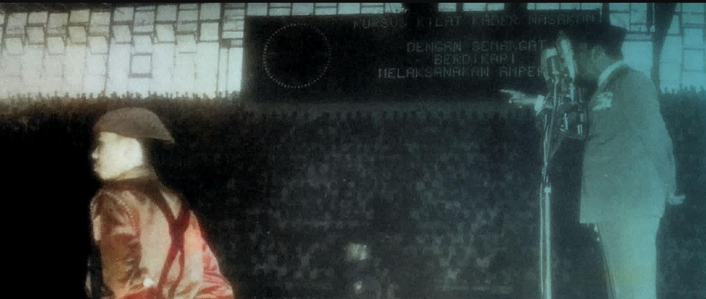
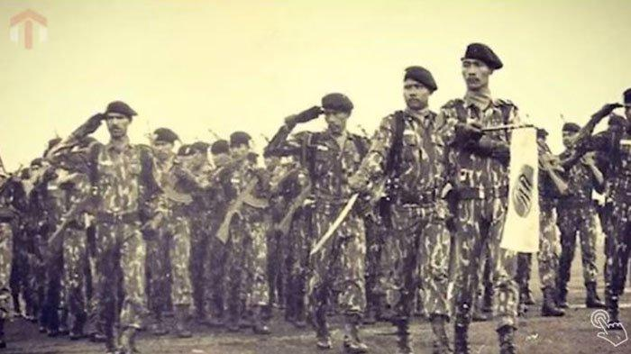
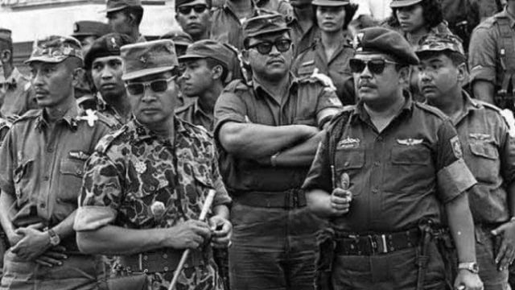

Presiden Sukarno berpidato dikawal seorang anggota Tjakrabirawa
Resimen Tjakrabirawa dibentuk pada 6 Juni 1962 dengan Surat Keputusan Nomor 211/PLT/1962 oleh Presiden Sukarno atas usul beberapa perwira militer termasuk KASAB (Kepala Staf Angkatan Bersenjata) pada saat itu, Jenderal Abdul
Haris Nasution setelah terjadinya beberapa percobaan pembunuhan terhadap Presiden Soekarno yang berhasil di cegah dan digagalkan, diantaranya adalah:
Peristiwa perebutan kekuasaan tanggal 3 Juli 1946, peristiwa granat Cikini tanggal 30 November 1957, peristiwa MIG-15 “Maukar” tanggal 9 Maret 1960, peristiwa pelemparan granat di Jalan Cendrawasih tanggal 7 Januari 1962 dan
peristiwa penembakan pada saat Idul Adha di halaman Istana Merdeka Jakarta tanggal 14 Mei 1962.
Semboyan dari resimen ini adalah "Dirgayu Satyawira" yang artinya, "Prajurit Setia Berumur Panjang"
Kekuatan dan Struktur

Pasukan Tjakrabirawa berbaris dalam defile parade
Dalam menjalankan tugasnya, terdapat tiga unit pasukan yang menjadi ujung tombak Tjakrabirawa. Di lingkaran terdepan, tersebar 3000 personel yang tergabung dalam Detasemen Kawal Kehormatan (KK). Mereka direkrut dari kesatuan
elite tiap matra, yakni:
Raiders Angkatan Darat; Korps Komando (KKO) Angkatan Laut; Pasukan Gerak Tjepat (PGT) Angkatan Udara; Brigade Mobil (Brimob) Angkatan Kepolisian. Keempat angkatan tersebut diberi nomor urut I sampai IV. Batalion I dan II KK
bertugas di Jakarta sedangkan Batalion III dan IV menjaga Istana Bogor, Cipanas (Cianjur), Yogyakarta, dan Tampaksiring (Bali).
Batalyon I KK berasal dari Angkatan Darat dipimpin oleh Mayor Ali Ebram yang kemudian digantikan Letkol Untung Sjamsuri. Batalyon II KK adalah eks pasukan KKO Angkatan Laut dipimpin oleh Mayor KKO Saminu. Batalyon III KK dari
PGT Angkatan Udara dipimpin oleh Mayor PGT Sutoro. Dan, Batalyon IV KK dari Brimob Angkatan Kepolisian dipimpin oleh Komisaris Polisi M. Satoto. Di samping KK, untuk menjaga keamanan di lingkungan Istana, dibentuk Detasemen
Pengawal Chusus (DPC) yang dipimpin Mayor CPM Djokosuyatno. DPC direkrut dari anggota Corps Polisi Militer (CPM) Angkatan Darat dengan kekuatan sebesar satu batalion. DPC menjadi bagian penting dalam pengamanan lokasi yang akan
dikunjungi presiden, termasuk mengirimkan tim pendahulu (advanced team).
Tjakrabirawa berpedoman pada sistem Mobile Perimeter Defence (pengamanan mobilitas keliling) dengan jarak pengawalan radius 50 meter. Di dalam area inilah combat elements bergerak dengan penuh kewaspadaan.
Sementara itu, pengamanan area yang menjadi tempat tujuan Presiden Sukarno disterilisasi Tjakrabirawa melewati tiga fase. Pertama, pengamanan objek sebelum acara, dimulai oleh tim khusus Clear Advance-Party. Kedua,
pengamanan perjalanan oleh tim konvoi yang mengarak perjalanan rombongan presiden. Ketiga, pengamanan di objek selama acara berlangsung oleh tim Advanced- Party yang diperkuat.
Akhir

Jenderal Soeharto membubarkan resimen Tjakrabirawa pada Maret 1966
Setelah lebih dari 3 tahun bertugas, peran Tjakrabirawa sebagai Resimen Khusus yang bertugas melakukan pengawalan dan pengamanan terhadap diri Presiden Republik Indonesia beserta keluarganya berakhir pada tanggal 28 Maret 1966.
Kesatuan ini dilikuidasi berdasarkan surat perintah Menteri Panglima Angkatan Darat nomor Sprint/75/III/1966 karena proses sejarah yang terjadi. Pada Pemerintahan Presiden Soeharto resimen ini dibubarkan, tetapi pasukan ini
dibentuk kembali dan diubah namanya menjadi Paspampres (Pasukan Pengaman Presiden).